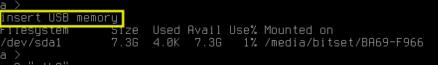

4.4. Packet Capture¶
Note
To use “Packet Capture”, USB memory is required. (USB3.0 is recommended)
Results are confirmed using Wireshark on PC.
4.4.1. Procedure for packet capture¶
4.4.1.1. (1) Start¶
Insert USB memory into USB3.0 port.
When USB memory is recognized, the message insert USB memory is displayed.
 Fig. 4.13 USB memory insertion message¶
Note
Make sure that there is enough free space on the USB memory.
Enter the capture start command on the main screen.
Format:
> cap start {rotate interval (seconds)}
By default, the file is rotated every 3600 seconds (1 hour). If you want to change the interval, specify it with an argument.

Fig. 4.14 Capture start¶
In the above example, capture of both eth0 and eth1 is started.
4.4.1.2. (2) Stop¶
4.4.1.3. (3) Result confirmation¶
Open and check the capture file (*.gz) saved on the USB memory with Wireshark. (No need to unzip the gz file)
The files are saved with the following naming convention.
eth{0|1}_{YYYY-MM-DD_hh-mm-ss}.pcap.gz

{kind=link}
{kind=link}
{kind=link}
4.4.2. ls: List files on USB memory¶
Format:
> ls
Example:

Fig. 4.18 Example of ls command execution¶
\*.pcap.gz is the result of packet capture.
4.4.3. cap start: Start packet capture¶
Format:
> cap start {ローテート間隔 (秒)}
Table 4.16 cap start コマンドの引数¶ Argument
Required
value
Rotate interval
x
unit:seconds, range:60 - 3600 (default 3600)
4.4.4. cap stop: Stop packet capture¶
Format:
> cap stop
After executing the command, the unsaved data is written to the USB memory, so please wait for a while. If the file list on the USB memory is displayed, the processing is completed.